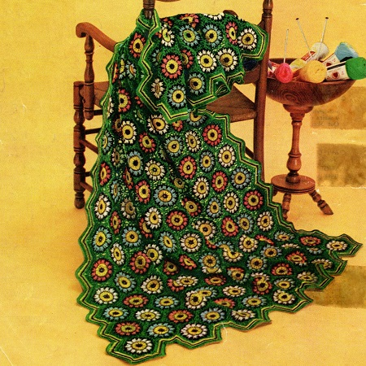
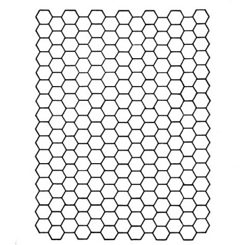

Colonial Charm Afghan Pattern
MATERIALS:
CHADWICK'S RED HEART SOCK AND SWEATER YARN, 3 Ply, Shrink-and-Stretch Resist Finish, Art. E.255: 9 skeins (1 oz. "Tangle-Proof" Pull-Out Skeins) of No. 12 Black; 7 skeins of No. 686 Paddy Green; 5 skeins of No. 230 Yellow and 7 skeins of assorted colors. Clark's O.N.T.
Plastic Crochet Hook No. 4
Afghan measures approximately 44 x 64 inches
GAUGE: Each motif measures 4 inches from point to point.
FIRST MOTIF: Starting at center with Black, ch 5. Join with sl st to form ring.
1st rnd: 12 sc in ring. Join and break off.
2nd rnd: Attach Yellow to first sc, ch 3, dc in same sc, 2 dc in each sc around. Join and break off.
3rd rnd: Attach Black to same place as sl st, sc in same place, sc in back loop of each dc around. Join and break off.
4th rnd: Attach any color of assorted colors to first sc, sc in same place, * sl st in next sc, ch 3,(yarn over, insert hook in same sc, draw loop through) 3 times; yarn over and draw through all loops on hook (puff st made), ch 3, sl st in same sc, sc in next sc. Repeat from * around. Join and break off.
5th rnd: Attach Black to ch-3 preceding any puff st, sc in same place, * ch 3, sc in next ch 3, ch 1, dc in next sc, ch 1, sc in next ch 3. Repeat from * around. Join and break off.
6th rnd: Attach Paddy Green to any dc, sc in same place, * ch 3, sc in next ch-3 loop, ch 3, in next dc make dc, ch 3 and dc; ch 3, sc in next ch-3 loop, ch 3, sc in next dc. Repeat from * around. Join and break off.
SECOND MOTIF: Work as for First Motif until 5 rnds have been completed.
6th rnd: Attach Paddy Green to any dc, sc in same place, ch 3, sc in next ch-3 loop, ch 3, dc in next dc, ch 1, sl st in corresponding loop on First Motif, ch 1, dc in same dc on Second Motif, ch 3, sc in next ch-3 loop, ch 1, sl st in corresponding loop on First Motif, ch 1, sc in next dc on Second Motif, ch 1, sl st in next loop on First Motif, ch 1, sc in next ch-3 loop on Second Motif, ch 3, dc in next dc and join next corner loop as before. Complete rnd (no more joinings).
Make 13 rows of 16 Motifs, joining adjacent sides as shown on chart as Second Motif was joined to First Motif (where 3 corners meet, join 3rd corner to joining of previous 2 corners).
EDGING 1st rnd: Attach Paddy Green to corner sp of any side motif, ch 3, in same sp make dc, ch 3 and 2 dc; * 3 dc in each of next 4 sps, holding back on hook the last loop of each dc make a dc in next 2 joined loops, thread over and draw through all loops on hook (joint-dc made), 3 dc in each of next 4 sps, in next sp make 2 dc, ch 2 and 2 dc. Repeat from * around, making joint-dc over each joining and 2 dc, ch 3 and 2 dc in each corner loop. Join and break off.
2nd rnd: Attach Yellow to same place as sl st, sc in back loop of next dc, sc in next 3 ch, * sc in back loop of each dc to within 1 dc of next joint-dc, holding back on hook the last loop of each sc make sc in next dc, skip next joint-dc, sc in next dc, thread over and draw through all loops on hook (1 sc decreased). Repeat from * around, decreasing 1 sc over each joint-dc and making sc in each ch of ch-3. Join and break off.
3rd rnd: Attach Black to same place as sl st, sc in same place, sc in back loop of next 2 sc, 3 sc in back loop of next sc, sc in back loop of each sc around, decreasing 1 sc over previous decreases as before and making 3 sc in center sc of each point. Join and break off.
4th rnd: Attach Yellow and repeat last rnd.
5th rnd: Attach Green to same place as sl st, ch 3, dc in back loop of each sc around, making 3 dc in center sc of each point and decreasing 1 dc over previous decreases as before. Join and break off. Block to measurements.

HOME